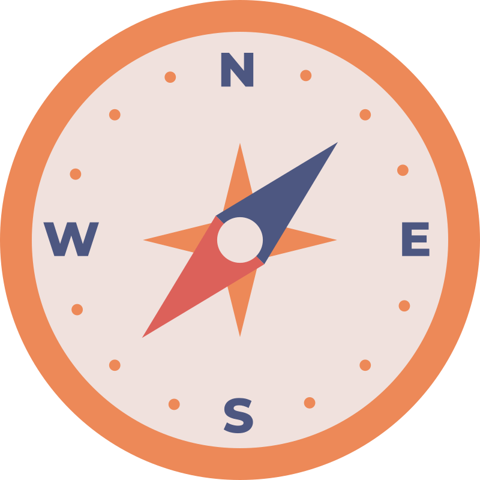

Ayo Menyelidiki Bersama!
Kamu sudah punya bekal informasi. Sekarang waktunya beraksi! Kamu boleh menyelidiki secara daring atau memakai benda nyata, bersama orang tua atau temanmu. Pilih sesuai minatmu!
Pilih Misimu
Misi 1 · Daring

Simulasi Magnet dengan Kompas (Phet) Simulation
Jelajahi dunia magnet secara virtual! Tonton dulu video panduannya, lalu buka simulatornya:
Misi 2 · Benda Nyata
Detektif Magnet: Misteri Benda yang Menempel
Jadilah detektif magnet! Buat prediksi, uji bersama teman atau orang tua, amati hasilnya, bergotong royong, dan catat data secara jujur.
Lembar Kerja
Catat Hasil Penyelidikanmu
Unduh lembar kerja di bawah ini untuk mencatat data penyelidikanmu.